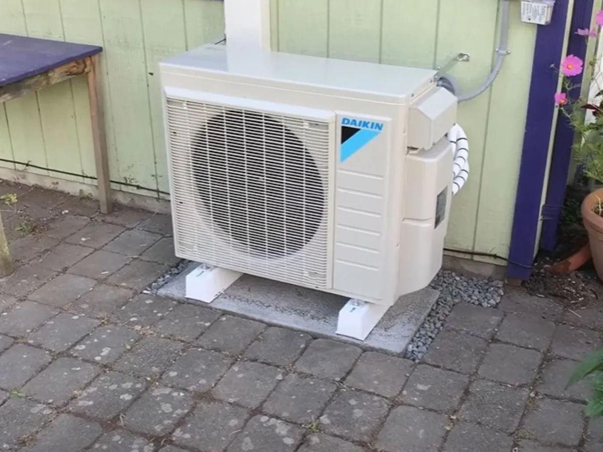
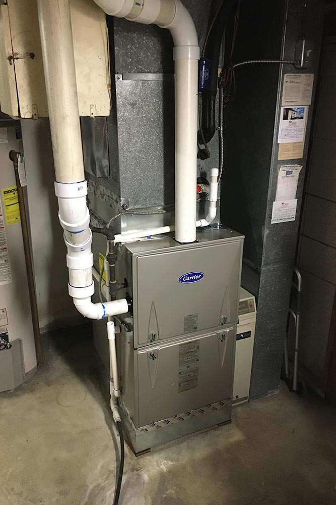
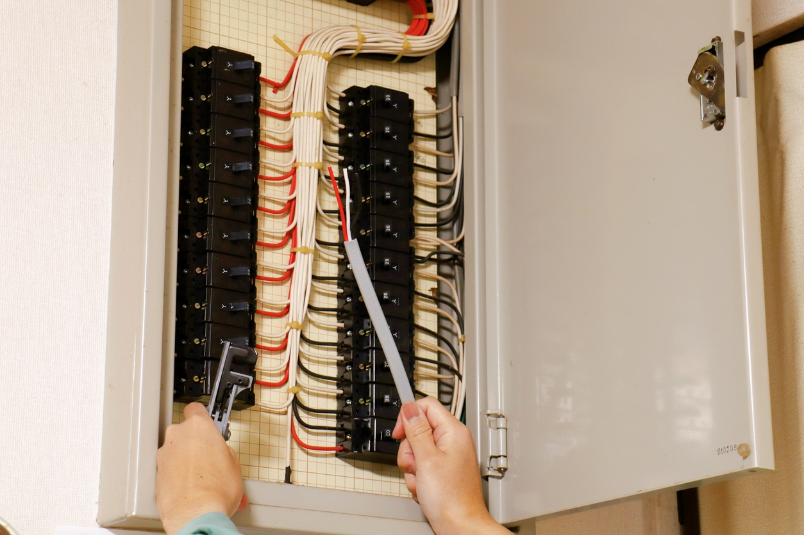
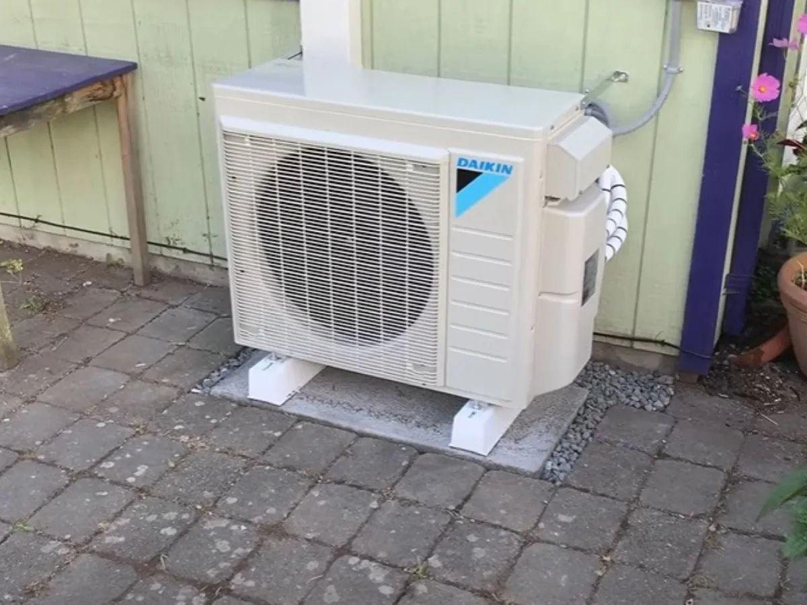
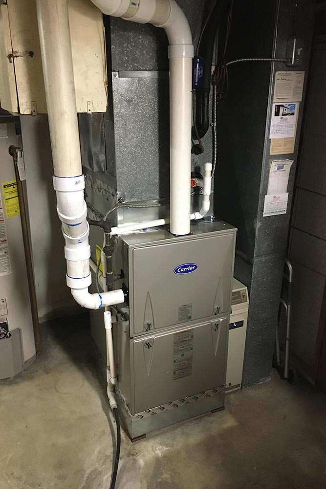
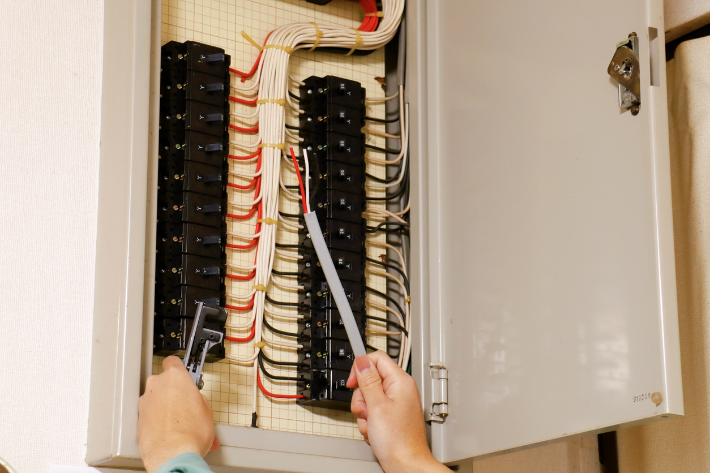

Climate Coaching Service
Welcome to the City of Markham's Homeowner Energy Advisor. This online tool helps you identify ways to improve your home's efficiency, comfort, and sustainability. In just 5 to 10 minutes, by answering simple questions, you'll receive tailored recommendations, contractor tips, and an overview of potential costs and environmental benefits. Whether you’re looking to cut utility bills, reduce emissions, or upgrade old equipment, this tool offers options for every budget.
Welcome to the City of Markham's online Homeowner Energy Advisor. This tool is designed to help homeowners understand how to improve the performance of their home. Whether the motive is to lower utility costs, lower their household emissions, improve the level of comfort in the home, replace ageing equipment or some combination, over the course of 5 – 10 mins during which homeowners will respond to very simple questions about their home, the on-line tool will provide direction on what areas of the homes to focus on, pointers on how to find a solid contractor to complete the work and expected cost and environmental benefits of each measure. There is a measure for everyone since the tool offers a spectrum of no-cost, low cost and higher investment options.
 




